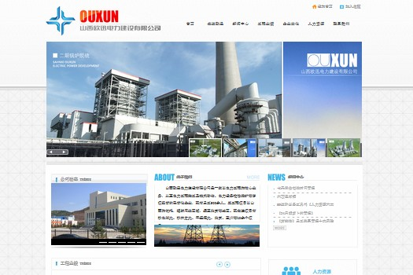
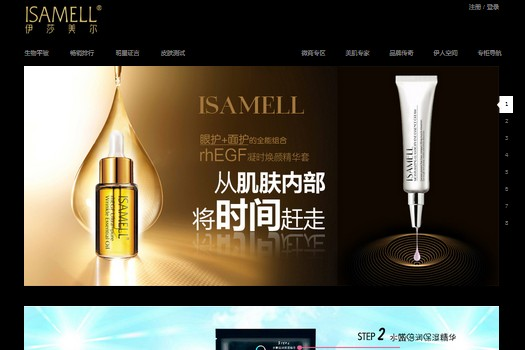
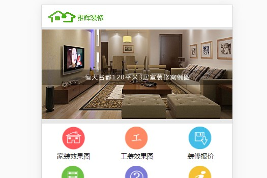
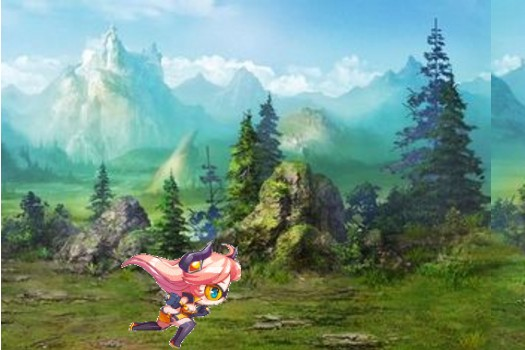
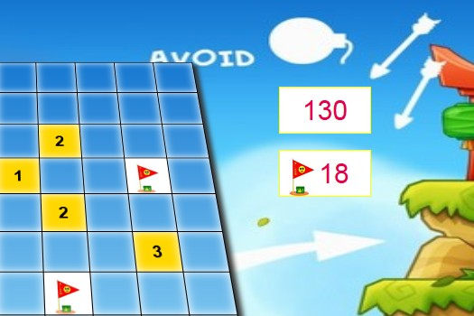
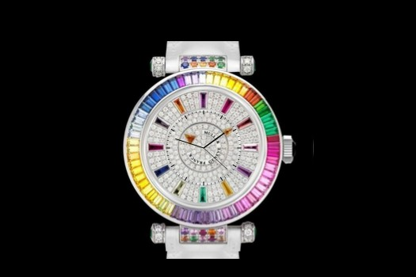

作品 展示
一个好的前端工程师是一个大使，各种各样的，需要有这样的心态在日常基础上。






Bootstrap 是最受欢迎的 HTML、CSS 和 JS 框架，用于开发响应式布局、移动设备优先的 WEB 项目.
fullPage.js是一个基于jQuery的全屏滚动插件，它能够很方便、很轻松的制作出全屏网站.
异步的JavaScript和xml，指一种创建交互式网页应用的网页开发技术.
Webpack 是当下最热门的前端资源模块化管理和打包工具。它可以将许多松散的模块按照依赖和规则打包成符合生产环境部署的前端资源。还可以将按需加载的模块进行代码分隔，等到实际需要的时候再异步加载。通过loader的转换，任何形式的资源都可以视作模块，比如ES6模块、CSS、图片、JSON、LESS 等。
Less是一门CSS预处理语言，它扩展了CSS语言，增加了变量、Mixin、函数等特性，使CSS更易维护和扩展。